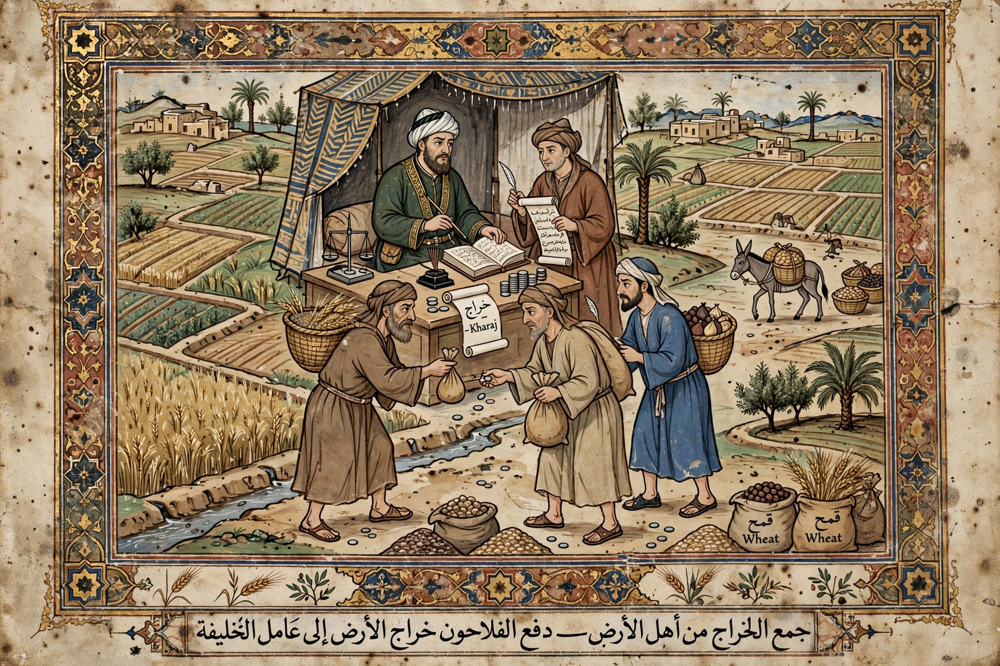

Kharaj

Kharaj (Arabic: خراج) is a type of individual Islamic tax on agricultural land and its produce, developed under Islamic law. Originally it referred to a land revenue levied on conquered territories left in the hands of their non-Muslim cultivators, and it became one of the principal fiscal instruments of the early Islamic caliphates and later Muslim states.
Origins
The institution took shape in the 7th century following the Muslim conquests. In the Sawad of Iraq, caliph Umar decided that rich conquered farmland should not be divided among the soldiers as booty but retained by its cultivators, who would pay kharaj to the state treasury for the benefit of the whole community — a precedent that shaped Islamic fiscal practice. The term itself is probably borrowed from Byzantine and Sasanian land-tax usage (Greek choregia, Aramaic karga).
Legal character
Jurists debated kharaj's relationship to the Qur'anic categories of taxation and to the jizya (poll tax on non-Muslims): in early usage kharaj sometimes covered both, but classical law distinguished kharaj on land from jizya on persons. Unlike the 'ushr, a tithe paid by Muslims on their own land, kharaj could be assessed as a fixed sum per unit area (kharaj al-wazifa) or as a proportion of the crop (kharaj al-muqasama). Once land was classified as kharaj land, most jurists held the tax remained due even if its owner converted to Islam, making kharaj effectively a property rather than a confessional tax.
Later history
Kharaj remained a mainstay of taxation in the Abbasid, Seljuk, and other successor states, administered through tax farming and land registers. In the Ottoman Empire variants of the land tax persisted under different names as the classical system evolved. The concept is occasionally invoked in modern Islamist fiscal proposals as an alternative revenue source alongside zakat.